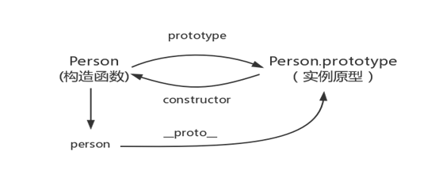
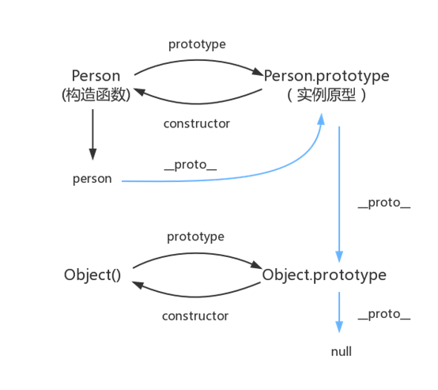

在之前的《JavaScript对象基础》中，我们大概了解了对象的创建和使用，知道对象可以使用构造函数和字面量方式创建。那么今天，我们就一起来深入了解一下JavaScript中的构造函数以及对象的原型及原型链。
一 构造函数
1，什么是构造函数
Javascript中使用构造函数的目的是批量创建拥有相同属性的不同对象。
实际上构造函数和普通函数并没有本质上的区别，唯一不同的地方在于：构造函数一般使用new关键字调用。
为了容易区别哪些是普通函数，哪些是构造函数，业界的共识是：构造函数使用大驼峰式命名规则（所有单词首字母大写）。普通函数和变量采用小驼峰式命名规则。
1 function myFunction(){
2 //这是普通函数
3 }
4 function MyFunction(){
5 //这是构造函数
6 }
2，构造函数的特点
构造函数最大的特点就是通过关键字this来给即将创建的对象添加属性和方法。
1 function Person(){
2 this.name = 'ren';
3 this.age = 12;
4 }
5 var perseon = new Person();
6 console.log(person);//{name:'ren',age:12}
3，构造函数的执行过程
首先隐式的创建一个空对象，赋值给this。
然后通过this添加属性和方法。
最后隐式的返回this对象。
1 //执行过程，以上面的Person为例
2 var this = {};
3 this.name = 'ren';
4 this.age = 12;
5 return this;
4，构造函数的返回值
上面提到，构造函数执行到最后将隐式的的返回一个对象，但相信大家也没有忘记，普通函数可以使用return关键字指定返回值。那么，如果我们手动的在构造函数最后添加了return关键字，那么它究竟会返回什么呢？
默认返回this。
如果手动添加原始值，还是返回this。
1 function Person(){
2 this.name = 'ren';
3 this.age = 12;
4 return 50;
5 }
6 var person = new Person();
7 console.log(person);//{name:'ren',age:12}手动添加引用值，最终返回这个引用值。
1 function Person(){
2 this.name = 'ren';
3 this.age = 12;
4 return {name:'ru',age:22};
5 }
6 var person = new Person();
7 console.log(person);//{name:'ru',age:22}请注意，以上情况都是基于把它当做构造函数，使用new关键字调用的结果。如果把它当做普通函数执行，那么无论return后面添加什么值，都将原样返回，如果没有return，则只会返回undefined。并且，这时函数内部将不会创建一个空对象，而且this也将不再引用这个空对象了，而是指向window对象。
1 function Person(){
2 this.name = 'ren';
3 return {name:'person'};
4 }
5 function Animal(){
6 this.name = 'ren';
7 return 'dog';
8 }
9 var person = Person();
10 var animal = Animal();
11 console.log(person);//{name:'person'}
12 console.log(animal);//'dog'
二 函数的原型
一般我们在讨论原型的时候通常是指构造函数的原型，因为使用普通函数的原型没有实际意义。所以下面提到的”原型”或“函数的原型”均指构造函数的原型。
要理解函数的原型其实很简单。只需弄清楚3个属性：
fn.prototype
obj.__proto__
obj.constructor
1， 函数的prototype属性
prototype是函数才具有的属性，它指向一个对象，该对象具有的属性和方法将被构造函数创建的对象(实例)继承。
1 function test(){}
2 console.log(typeof test.prototype);//'object'
3 console.log(test.prototype);//{...}这里说继承其实并不准确。比如a继承了b的属性和方法。字面上的意思是：a拥有了和b完全相同的属性和方法。但构造函数创建的对象（实例）并没有直接拥有原型上的属性和方法，它只是拿到了使用那些属性和方法的权限而已。
1 function Person(){}
2 Person.prototype.name = 'ren';
3 var person = new Person();
4 console.log(person.hasOwnProperty('name'));//false,hasOwnProperty()方法用于检测对象真实具有某属性，而非继承5 console.log(person.name);//'ren'，但是可以访问name属性
2， 对象的__proto__属性
大部分对象（不管什么方式创建的）都有__proto__属性。这个属性将指向它自己的原型。那么它自己的原型是个什么东西呢？
前面提到，构造函数的目的是批量创建拥有相同属性的不同对象，既然要创建大量拥有相同属性的对象，那么肯定需要一个统一的模板，这个统一的模板就是对象的原型。实际上它就是构造函数的prototype属性指向的那个对象。
1 function Person(){}
2 var person = new Person();
3 console.log(person.__proto__ === Person.prototype);//true
3， 对象的constructor属性
constructor属性并不是所有对象都有的，只有原型对象才具有该属性。该属性指向与之相关联的构造函数。
1 function Person(){}
2 var person = new Person();
3 console.log(person.hasOwnProperty('constructor'));//false
4 console.log(Person.prototype.constructor === Person);//true
5 console.log(person.__proto__.constructor === Person);//true注意，虽然constructor属性并不是所有对象都有的，但是实例依然可以访问该属性，并最终得到相应的构造函数。那是因为当读取实例的属性时，如果找不到，就会查找与对象关联的原型中的属性。
4， 实例、构造函数和原型的关系

三 原型链
1，原型链
前面讲到，大部分对象都有__proto__属性，指向它自己的原型对象。那么原型对象自身呢？原型对象自身作为对象，当然也具有__proto__属性，并且指向原型的原型。
同样的，原型的原型也是一个对象，那么它也就有一个constructor属性指向一个关联的构造函数。依次类推，原型对象最终将指向Object对象的原型，与之相关联的构造函数则是Object。并且Object对象的原型就没有原型对象了，如果访问Object.prototype.__proto__将返回null。
1 function Father(){}
2 Father.prototype.name = 'ren';
3 var father = new Father();
4
5 function Son(){}
6 Son.prototype = father;
7 Son.prototype.age = 12;
8 var son = new Son();
9
10 function GrandSon(){}
11 GrandSon.prototype = son;
12 GrandSon.prototype.address = 'cd';
13 var grandson = new GrandSon();
14
15 Object.prototype.mail = '@';
16
17 console.log(grandson.name);//'ren'
18 console.log(grandson.age);//12
19 console.log(grandson.address);//'cd'
20 console.log(grandson.mail);//'@'从上面的例子可以看出，访问对象的属性和方法，其实是通过__proto__属性在对象的原型链上查找，这一点和在函数内访问变量有一点类似。
其实上面的例子有一个小小的bug，不知道你们发现了没有。
1 console.log(Son.prototype.constructor);//Father (){}
2 console.log(GrandSon.prototype.constructor);//Father (){}
3 //打印的都是构造函数Father，这是为什么呢？Son构造函数的原型被我们手动指定为了father（Father构造函数的一个实例），father作为一个实例，它并不真实拥有constructor属性，所以当我们访问Son.prototype.constructor属性时，实际在访问father.__proto__.constructor，即Father构造函数。但Son作为一个构造函数，被它构造出来的对象在访问constructor时理应指向Son本身才符合逻辑，所以我们应该在修改Son的原型后手动为father实例添加constructor属性，并引用Son。相似的，son实例也应添加一个constructor属性，并引用GrandSon（使用father或Son.prototype都可以达到目的，因为他们指向同一个对象。同理，son或者GrandSon.prototype也一样）。
1 Son.prototype.constructor = Son;
2 GrandSon.prototype.constructor = GrandSon();这一段可能理解起来有点绕，但是请务必多尝试，并真正理解它。原型链是JS中一个相当重要的概念。最后附一张原型链的图解。

2，Object.create()
方法接受一个对象或者null作为参数，返回一个对象。如果传递了一个对象，那么该对象将成为返回对象的原型。
1 var myProto = {name:“ren”};
2 var obj = Object.create(myProto);
3 obj.__proto__ === myProto;//true如果传递了null作为参数，那么它将没有原型，所以也没有__proto__属性了。这就是在第2.2节说大部分对象都有__proto__属性的原因了。还有一种说法是：并不是所有对象最终都继承自Object。当然null也不继承自Object。
1 var obj = Object.create(null);
2 console.log(obj.__proto__);//undefined